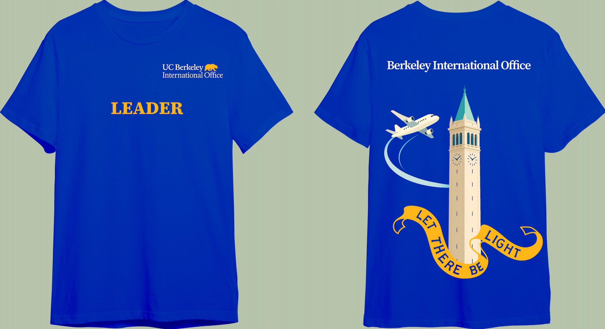
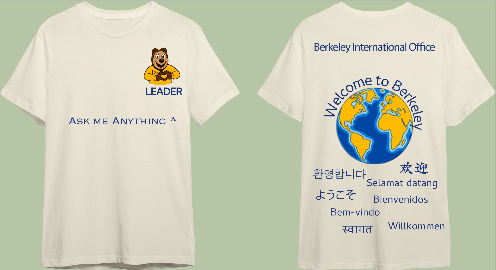
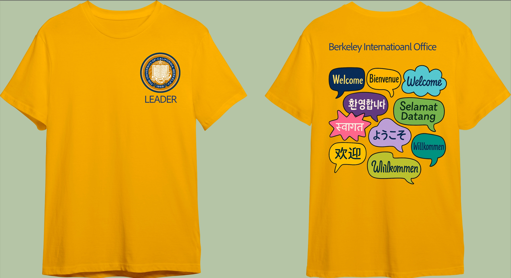

Three shirt concepts for the Berkeley International Office orientation leader team — the shirt new international students look for when they need help. Each concept pairs a front-side "LEADER" identifier with a back-side welcome graphic, built on Berkeley blue and gold and the idea of arriving somewhere new.
Concepts

01 · Campanile & Flight Path
Berkeley blue with the Campanile and a plane tracing its arc toward campus — the arrival every international student makes. The "Let There Be Light" banner ties the university motto into the journey.

02 · Ask Me Anything
Oski making a heart, with "Ask Me Anything ^" pointing up at him — turning the shirt into an invitation rather than a label. The back carries a globe and "welcome" in the languages our incoming class actually speaks.

03 · Speech Bubbles
California gold with the university seal on the front, and a cluster of speech bubbles on the back — every "welcome" in a different color and shape, so the crowd reads as many voices rather than one message repeated.
How I Made It
Started from the brief's real constraint: the shirt has to be recognizable across a crowded plaza, and readable to someone whose first language isn't English.
Used ChatGPT to draft and pressure-test concept directions, then built each layout in Canva and refined type, color, and artwork in Photoshop.
Locked every concept to the Berkeley blue and gold palette so all three read as one team, and mocked them up on shirt templates for the team vote.
What I Learned
Designing for a team is a stakeholder problem before it's a visual one — the shirt has to work for the leaders wearing it and the students reading it. Presenting three distinct directions instead of one polished favorite made the decision easier and the feedback more specific.